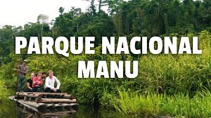
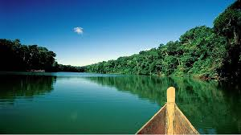
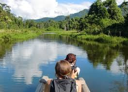
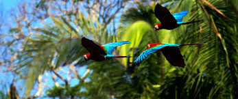

📍 1. Historia y Ubicación

- Ubicación: Regiones de Cusco y Madre de Dios, Perú.
- Declarado Parque Nacional en 1973.
- Reconocido como Reserva de la Biosfera y Patrimonio Mundial por la UNESCO.
🌳 2. Paisaje y Biodiversidad

- Uno de los lugares con mayor diversidad biológica del planeta.
- Hogar de más de 1,000 especies de aves y 200 especies de mamíferos.
- Incluye ecosistemas que van desde la puna andina hasta la selva amazónica.
🌎 3. Significado Cultural

- Territorio ancestral de comunidades nativas amazónicas.
- Espacio sagrado de conexión con la naturaleza y la espiritualidad.
- Alberga culturas en aislamiento voluntario.
🚤 4. Importancia Turística

- Destino ideal para el ecoturismo y la observación de fauna.
- Actividades: excursiones en bote, caminatas y avistamiento de aves.
- Considerado uno de los mejores lugares del mundo para vivir la selva amazónica.